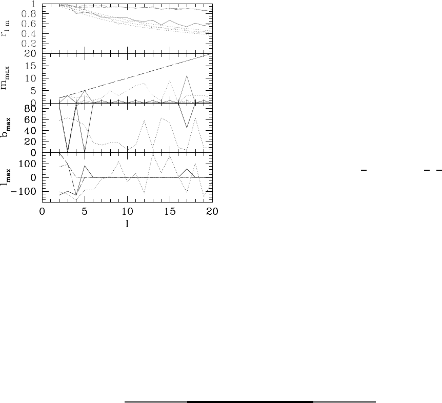

4
FIG. 3: m-preference results up to ℓ = 20 for the V-band of
galactic templates. We have included free-free (solid) syncro-
ton (dot-dash) and dust (long-dash) maps; for reference we
have rep roduced results for the cleaned maps (dotted line).
tipoles (and to some extent a preferred Cartesian axis)
this does not pick a specific m. Hence we don’t need a
mode l favouring specific shapes (e.g. plana rity); merely a
mode l with a preferre d axis. If the low ℓ fluctuations are
due to the gravitational potential on the la st scattering
surface we can go further. The process may be describe d
in terms of the potential Fourier modes Φ(k, η
ls
); each
of these modes is reflected in the CMB in a pattern with
exact m = 0 shape, with n aligned with
ˆ
k. One must
supe rpose several such modes to obtain a given ℓ, s pecif-
ically:
a
ℓm
= A
Φ(k, η
ls
)i
ℓ
j
ℓ
(k∆η
ls
)Y
⋆
ℓm
(
ˆ
k) (4)
Superposing a large numb er of modes leads to no pre-
ferred direction or m preference. Should the number of
mode s be limited to a lattice, though, a preferred sha pe
and/or preferred axis will emerge. For a cubic lattice the
low ℓ may become superpositions of mainly three modes
a
ℓm
= A
1
δ
m0
+A
2
Y
⋆
ℓm
(
π
2
, 0)+ A
3
Y
⋆
ℓm
(
π
2
,
π
2
) and a solution
in terms of A
i
may now be found for a g iven observed
m-preference.
But it could also be that we live in a slab space, where
there is a la rge number of modes in all but one direc-
tion. This will erase any preference for a specific m, while
keeping the pr e ferred direction. The choice between the
two possibilities hinges crucially on the phase corre lation
found for ℓ = 3 and ℓ = 5, with the implication that there
may be a preferred frame (rather than just a preferred
axis). We find this feature the most tantalising aspect of
our analysis.
Acknowledgements We thank Kris Gorski, Andrew
Jaffe, Jo˜ao Medeiros and Max Tgemark for helpful com-
ments. Some o f the results in this pap er were derived us-
ing the HEALPix package ([35]), and calculations were
performed on COSMOS, the UK cosmology supercom-
puter facility.
[1] A. de Oliveira-Costa et al., 2004, Phys. Rev, D69, 063516
[2] Schwarz D. et al., Phys.Rev.Lett. 93: 221301, 2004.
[3] J. Ralston and P. Jain, Int. J. Mod. Phys. D13, 1857,
2004.
[4] Eriksen H.K. et al., 2004, Astrophys. J, 605, 14
[5] Eriksen H.K. et al., 2004, astro-ph/0401276;
astro-ph/0407271
[6] H. Eriksen et al, ApJ, 612, 633, 2004 [astro-ph/0403098].
[7] Hansen F.K., Banday A.J., G´orski
K.M.,2004,astro-ph/0404206
[8] Land K., Magueijo J., 2004, astro-ph/0405519
[9] Hansen F.K. et al., 2004, astro-ph/0402396
[10] Vielva P. et al., 2003, astro-ph/0310273
[11] Bennett C.L. et al., 2003, Astrophys. J. Suppl, 148, 1
[12] J Weeks et al, Mon. Not. Roy. Astron. So c. 352, 258,
2004.
[13] B. Roukema et al, astro-ph/0402608.
[14] N. Cornish et al, Phys. Rev. Lett. 92, 201302, 2004.
[15] A. Berera, R. Buniy and T. Kephart, h ep-th/0311223.
[16] J. Moffat, astro-ph/0502110.
[17] Ferreira P., Magueijo J., G´orski K., 1998, Ast rophys.J,
503, 1
[18] A.J. Banday, S. Zaroubi, K.M. Gorski, astro-ph/9908070.
[19] J. Magueijo, 2000, Astrophys. J. Lett, 528, 57
[20] Magueijo J., Medeiros J., 2004, MNRAS 351, L1-4
[21] Magueijo J., 1995, Phys. Lett, B342, 32. Erratum-ibid,
B352, 499.
[22] P. Ferreira and J. Magueijo, Phys. Rev. D56: 4578-4591,
1997.
[23] M. Tegmark, A. de Oliveira-Costa and A. Hamilton,
Phys.Rev. D68: 123523, 2003.
[24] P. Bielewicz, K. Gorski and A. J. Banday,
astro-ph/0405007.
[25] Coles P. et al., 2003, astro-ph/0310252; P. Coles,
astro-ph/0502088.
[26] J. Maxwell, A treatise on Electricity and Magentism,
Vol.1, Dover Publications, N Y, 1954.
[27] Copi C.J., Huterer D., Starkman G.D., Phys.Rev. D70,
043515, 2004.
[28] M. R. Dennis, J. Phys. A 37 (2004) 9487-9500.
[29] K. Land and J. Magueijo, astro-ph/0407081.
[30] M. R. Dennis, math-ph/0410004.
[31] G. Katz and J. Weeks, Phys.Rev. D70, 063527, 2004.
[32] J. Weeks, astro-ph/0412231.
[33] M. Lachieze-Rey, astro-ph/0409081.
[34] K. Land and J. Magueijo, preprint.
[35] G´orski K.M., Hivon E., Wandelt B. 1998,
astro-ph/9812350